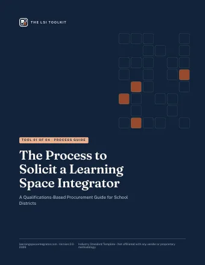
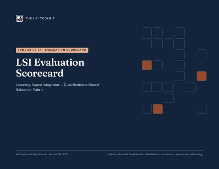
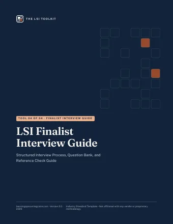

Learning Space Integration
Learning gets lost between the plan and the purchase order.
A Learning Space Integrator (LSI) keeps a district's learning goals intact through planning, design, purchasing, and implementation, so the spaces you pay for are the spaces your students and teachers need.
The usual way
- PlanDistrict
- DesignArchitect
- PurchaseLow bid
- InstallContractor
- vision handed off
- furniture left for last
- price decides
- teachers left to adapt
With a Learning Space Integrator
- Plan
- Design
- Purchase
- Activate
One partner accountable for learning intent, start to finish
School construction is built to deliver buildings. Learning needs someone to own the rest.
Architects design the building and contractors build it. Too often, the furniture, technology, and classroom setup that shape a student's day are decided last, by whoever wins the bid.
| Question | The usual way | With an LSI |
|---|---|---|
| When learning goals are set | Handed off from the district to the design team | First, before design decisions are locked |
| Furniture and technology | Treated as leftovers at the end of the project | Planned together with space and teaching practice |
| How products are chosen | From a catalog or line card, and price decides | Matched to the instructional approach, with transparent sourcing |
| Scope | Each school gets the same standard package | Each school is scoped and accountable as its own project |
| When involvement ends | When the boxes are delivered and installed | After teachers are prepared to use the space, before and after move-in |
| How success is measured | On-time delivery | How the space is used, adopted, and experienced |
Three phases, one partner, the same learning goals throughout.
Start with how students learn
Leaders, teachers, students, facilities, and the design team agree on the learning each space must support. That shared vision becomes the brief for every later decision.
Turn the vision into spaces
Layouts, furniture, and technology are selected to match the instructional approach, school by school, with transparent sourcing and a realistic budget.
Activate the space, then protect it
Installation is coordinated, teachers are prepared to use the space well, and results are reviewed after move-in so the space keeps working as intended.
The LSI Toolkit: everything you need to select the right partner
Four ready-to-use procurement tools, built around a qualifications-based selection process. Edit them for your district and state requirements.

The Process to Solicit an LSI
A four-phase procurement guide with checklists, a timeline, and award letter templates.
PDF · 19 pages
RFQ Template
A complete Request for Qualifications with conflict-of-interest disclosure and school-by-school scope.
PDF · 17 pages

Evaluation Scorecard
A nine-criteria rubric with 29 scored sub-criteria, plus an Excel calculator that weights and ranks firms.
PDF · 17 pages, landscape

Finalist Interview Guide
A structured interview, a 19-question bank, anti-bias rules, and a reference check guide.
PDF · 17 pages
Looking for a Learning Space Integrator?
Tell us about your project and we'll help you connect with a Learning Space Integrator. You'll also find the questions to ask any firm you consider.